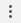

DevTools is a feature on the Google Chrome browser that allows developers to view and diagnose every piece of their web applications. Even for non-developers, DevTools can be very useful. Using DevTools, you can edit or change any aspect of a website on your local machine. Your changes will be lost once you refresh the webpage, but that doesn’t mean learning DevTools doesn’t have its uses.
Figure 1. An example of what you can do with DevTools.
Getting Started
To get started using Chrome DevTools:
- Open this webpage with Chrome if you aren't currently using it. Instructions on how to download Google Chrome can be found here.
- Open DevTools by either:
- Right-clicking on any part of the page and clicking Inspect
- Going to Settings > More Tools > Developer Tools by using the top right settings button .
- Pressing Ctrl + Shift + I (Cmd + Opt + I on Mac)
-
Dock DevTools to the right of this browser if it isn't already there by going to the settings panel inside DevTools and
clicking the right dock icon.
Figure 2. Right Dock icon.
-
Open the Elements tab at the top of DevTools. Elements is used to inspect the HTML and style of a website.
Figure 3. Elements page.
- Adjust the size of DevTools so that it is around half the webpage width.
How to Read HTML
Before we begin, we must understand what HyperText Markup Language (HTML) is. HTML tells a web browser how to organize and structure a website. Some websites are entirely coded in HTML, but most are only partly HTML.
HTML Tags
Tags could be anything you find on a webpage, such as buttons, text, boxes, tables, or images. Tags are written like so:
<tag>Something might go here</tag>
Every webpage is structured with these tags:
<!DOCTYPE html>
<html>
<head>
<!-- Information about this webpage goes here, such as its title -->
</head>
<body>
<!-- Nearly all content goes in here, the body of the webpage -->
</body>
</html>
Div
One of the most common and important tags is a div. A div is used to organize and style a box of code. You will notice that div’s are used extensively to group similar objects together.
Here is a piece of text located within a div. Let's see how to change this to something else!
Edit the HTML of a Website
To edit the text of the red sentence above:
- Find the panel containing HTML code on the left of the Elements page.
- Hover over various lines in this panel. Notice that Chrome will highlight the tag’s location on the page with colors.
- Locate the div that we want to change.
- Open this div by clicking on the icon to show its contents.
- Open the p tagline using the icon or by right-clicking on the sentence we want to change above and clicking Inspect to immediately locate it in DevTools.
- Double-click on the sentence or right-click and click Edit Text to change the text.
Figure 4. Editing text.
- Type in whatever you want to and press Enter. The text should change on your webpage!
Edit the Style of a Website
Still on the Elements page, you should see the Styles panel on the right of the page. This panel is used to edit the style of a tag.
To edit the style of the red sentence above:
- Click on “red” in “color: red” at the top of the panel, underneath “element.style {“.
- Type in “green” and press Enter. The text should now be green.
- Click directly underneath the newly edited line if a new textbox has not already appeared underneath it.
- Type “font-weight:bold” into the textbox and press Enter. The text should now be bolded!
- Repeat steps 3-4 with the following styles:
- font-size:30px
- font-family:Verdana
- font-variant:small-caps
- text-decoration:underline
- direction:rtl
The text should now be in a capitalized, larger, green, underlined, Verdana font from right-to-left. To learn more style changes you can make, head to this CSS cheat sheet.
Figure 5. Final changes.
You now know how to edit the content and style of any webpage! If you’d like to learn more about the remaining pages of Chrome DevTools, head to the Google Chrome DevTools Documentation.